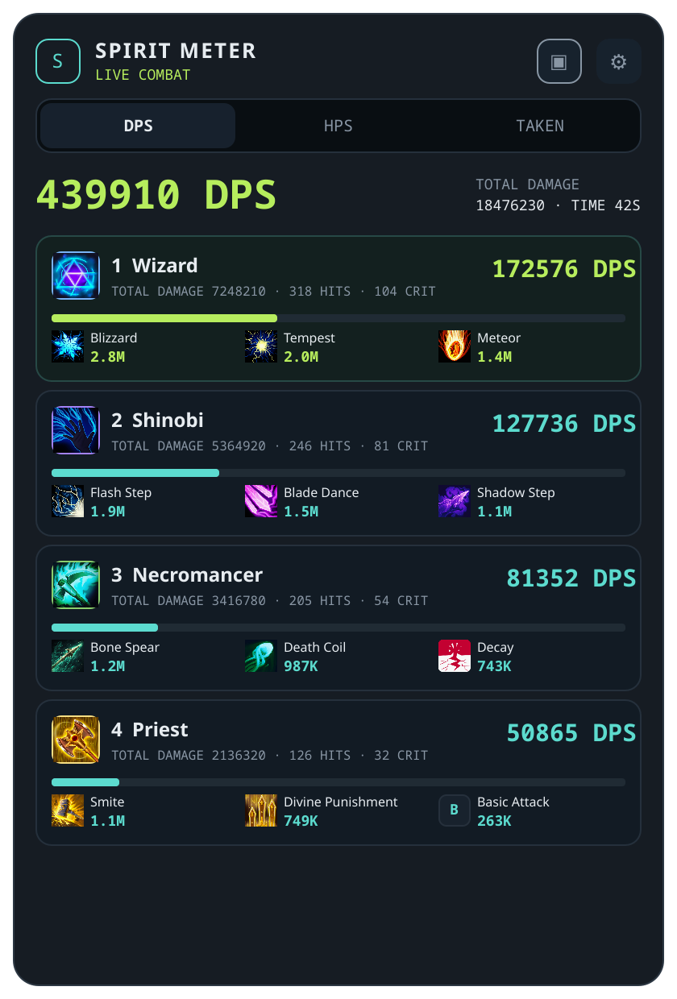
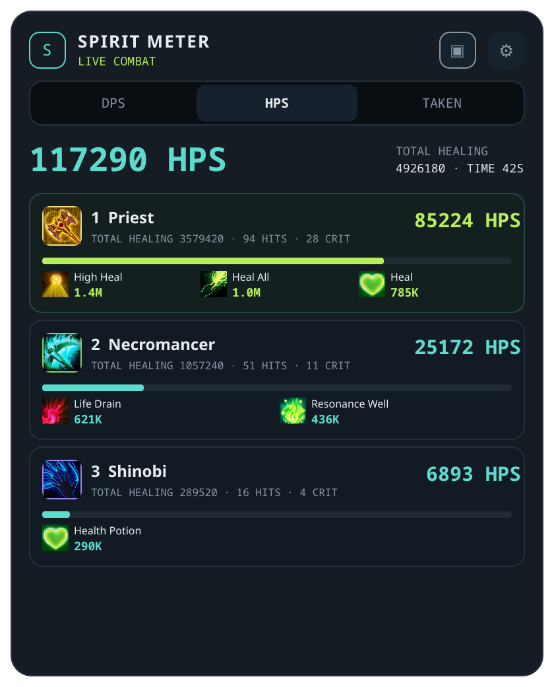
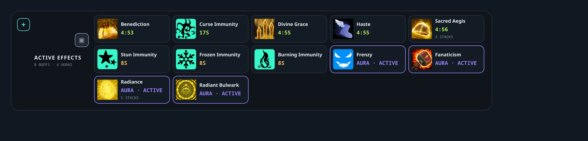
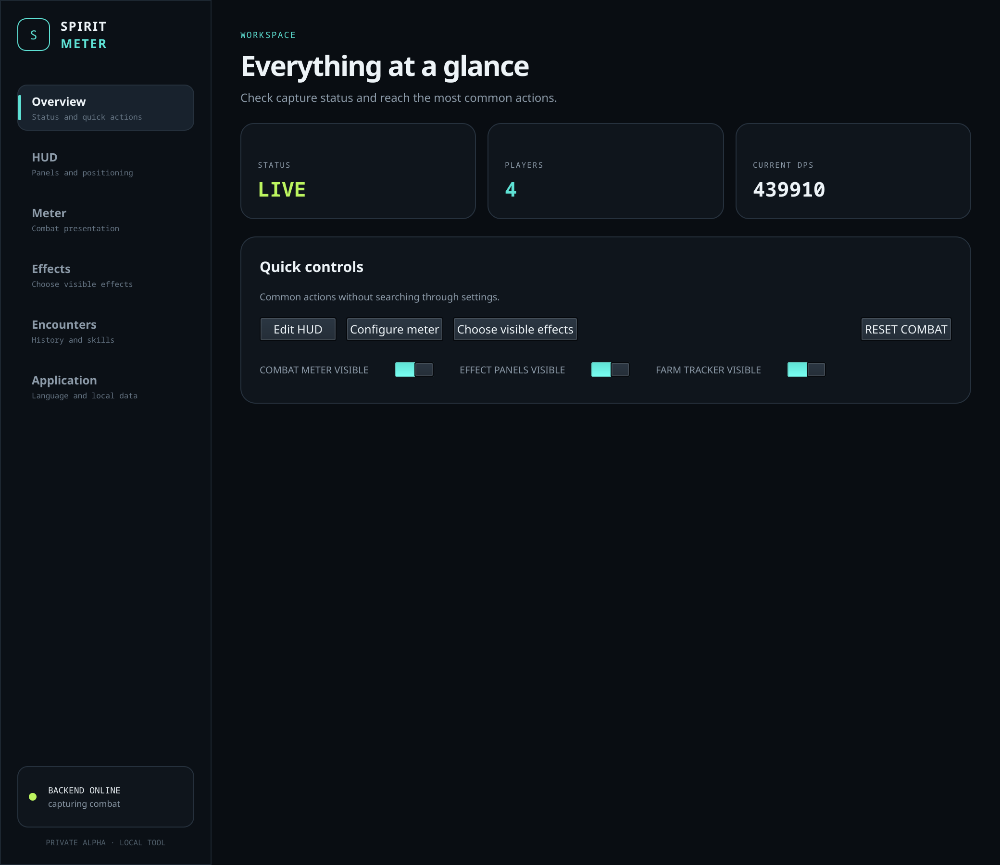
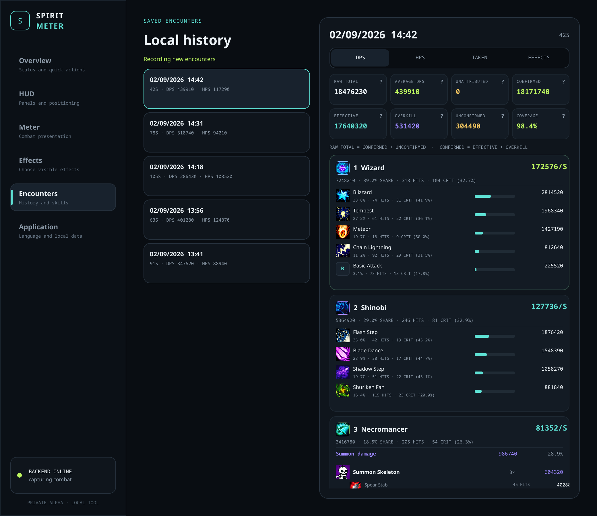
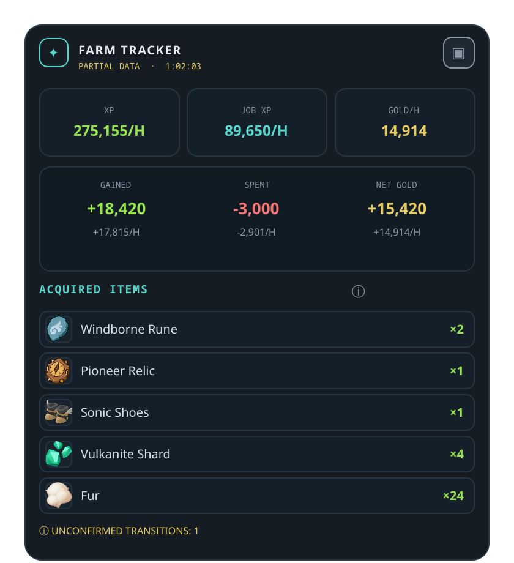
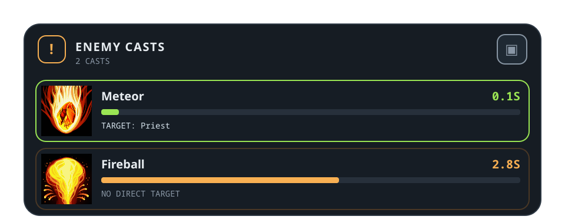
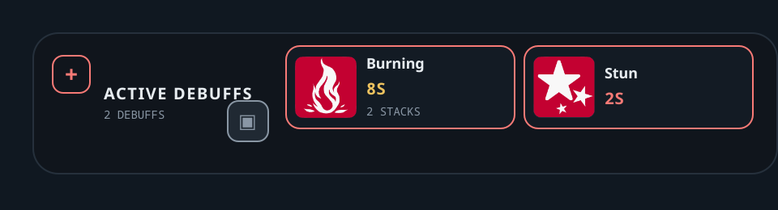
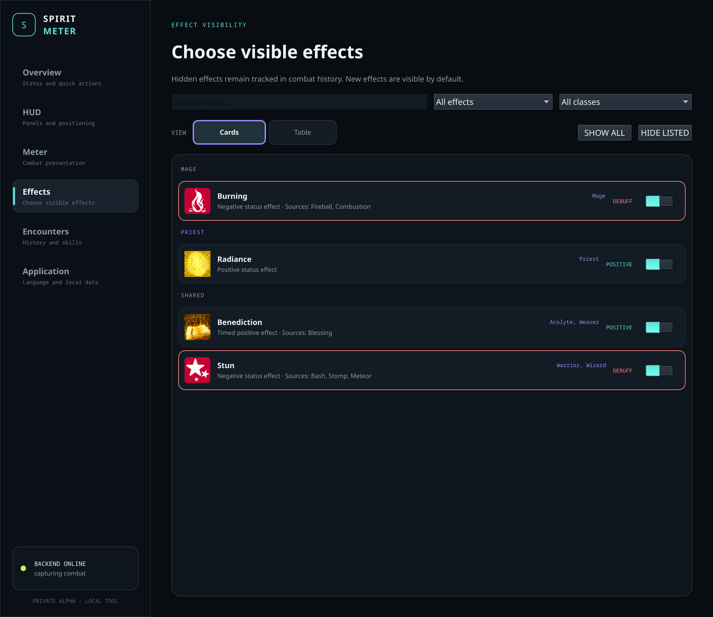
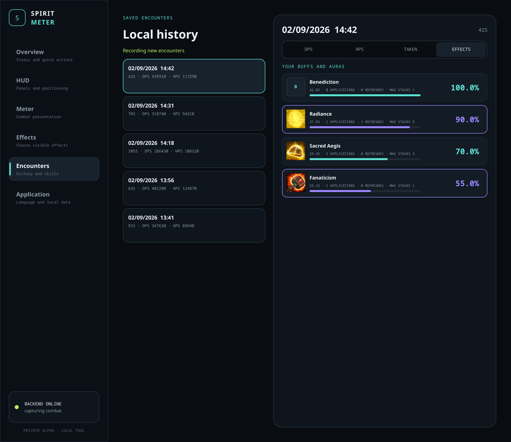

Cada encontro conta.
DPS, cura e histórico de combate para olhar além do número final.
EM DESENVOLVIMENTO · ALPHA
Acompanhe seu combate, organize seus efeitos e entenda seu farm com o Spirit Meter, um overlay para SpiritVale.
Ainda não há uma versão pública disponível. Os pacotes serão publicados aqui após a validação com os testers.
DPS, cura e histórico de combate para olhar além do número final.
Painéis de buffs, auras e debuffs com filtros e posicionamento independente.
Acompanhe experiência, ouro e itens adquiridos durante sua sessão.
Interface real, dados de demonstração. Classes substituem os nicks. As imagens estão em inglês; as explicações acompanham seu idioma.
Acompanhe seu DPS ou o da party, o dano total e a contribuição das skills, com ícones de classe para facilitar a leitura.

Veja HPS, cura total e as skills responsáveis por cada contribuição. Cura efetiva e overheal são separados nas análises do histórico quando confirmados.

Mantenha efeitos ativos, duração restante e stacks à vista. Escolha o que aparece e organize os painéis ao redor da sua área de jogo.

Confira o estado da captura e acesse ações comuns: resetar combate, mostrar ou ocultar painéis e abrir os ajustes de HUD e efeitos.

Revisite encontros salvos com detalhes por skill, dano bruto e efetivo, overkill e cobertura confirmada. Valores não confirmados ficam identificados.

Acompanhe XP e job XP por hora, ouro ganho e gasto, saldo e itens adquiridos. Filtre itens por tipo e escolha quantos exibir.

Veja os tempos dos casts inimigos detectados e os alvos, quando disponíveis. Escolha apenas bosses ou todos os inimigos detectados; algumas skills não têm alvo direto.

Dê aos efeitos negativos um espaço próprio, com duração restante e stacks. Mova e configure este painel separadamente dos buffs e auras.

Busque efeitos e filtre por classe ou categoria. Use cards ou tabela para escolher o que aparece; efeitos ocultos continuam sendo registrados no histórico.

Revise por quanto tempo seus buffs e auras ficaram ativos no encontro salvo, incluindo aplicações, renovações e stacks máximos.

{kind=link}
{kind=link}
{kind=link}
{kind=link}
{kind=link}
{kind=link}
{kind=link}
{kind=link}
{kind=link}
{kind=link}